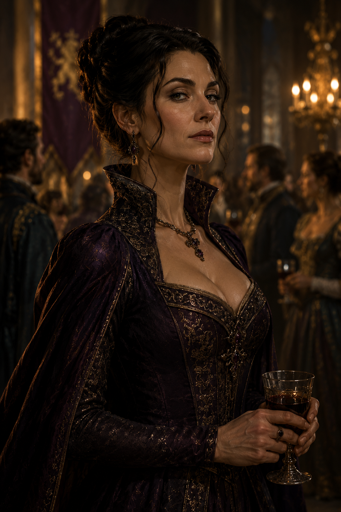
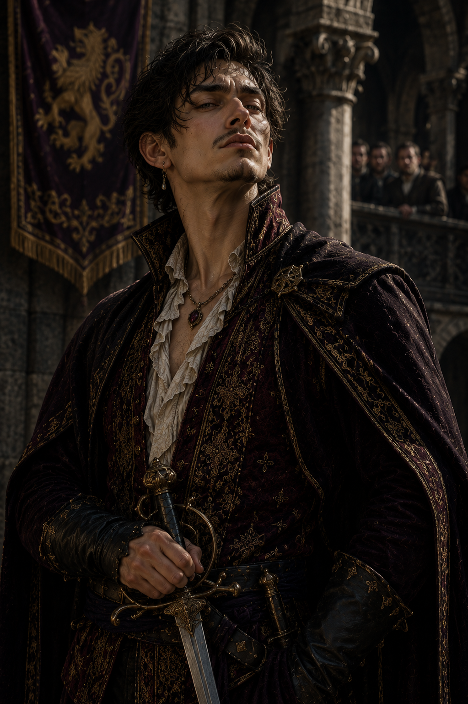
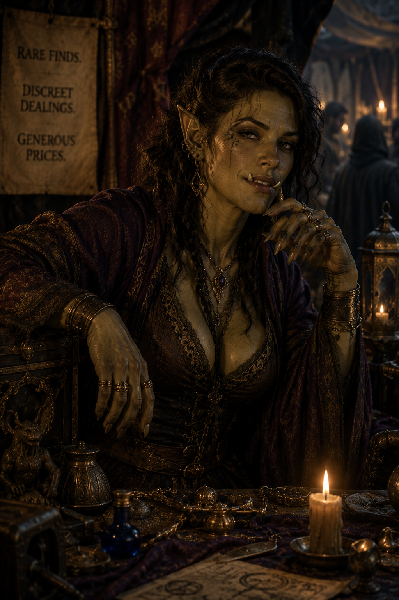
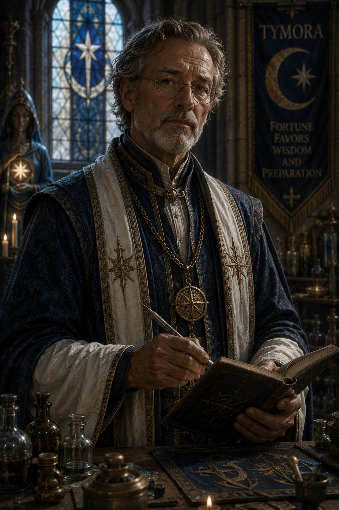
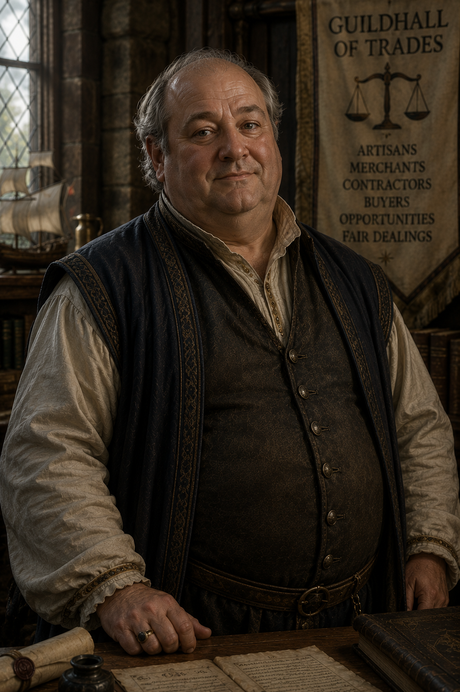
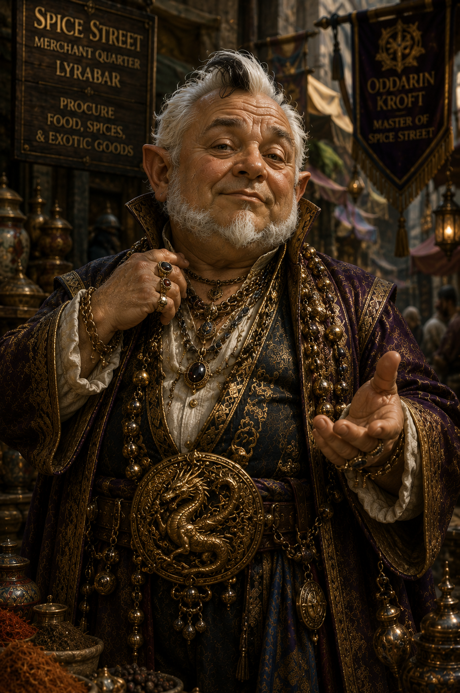

Notable NPCs invited to the Ball

Lady Miraval Quent
A Noble Scholar
Lady Miraval Quent was a familiar presence in the quieter halls of Impiltur’s learned circles, a figure whose age only seemed to sharpen rather than dull her restless curiosity. Now in her sixties, she carried herself with the brisk energy of someone who had long since outpaced the expectations of both court and time. Her silvering auburn hair was typically pinned up in a practical, slightly chaotic arrangement that always seemed one strong idea away from unraveling. Deep lines at the corners of her eyes did little to diminish their brightness; they only framed a gaze that still sparked with discovery whenever ancient texts or forgotten histories were mentioned. She spoke with rapid enthusiasm, often forgetting that others could not match the speed of her thoughts, as she stitched together theories, half-remembered passages, and speculative leaps in a single breathless stream of conversation.
Despite her reputation as an excitable noble scholar, Lady Quent is one of the kingdom’s most persistent and well-traveled historians, having spent decades tracing fragments of civilizations long erased from memory. Her work has earned her rare access to sealed archives and led her into ruins others consider too unstable or too cursed to enter. She claims her life’s purpose is the discovery of a lost civilization that predates even the oldest recorded empires of Faerûn, though few realize how close she has already come to that truth. In truth, Miraval knows more about the location tied to Prince Edric’s quest than she openly admits, holding back key details behind carefully chosen omissions and academic misdirection. Whether motivated by caution, reverence for what she has uncovered, or fear of the consequences of full disclosure, she remains a valuable—if unpredictable—ally, guiding adventurers through history skill challenges with equal parts brilliance, misdirection, and buried intent.

Lord Blance Vramor
Merchant Lord
Lord Blance Vramor was the sort of man whose wealth entered a room before he did. One of the more influential grain merchants operating beneath the shadow of Lyrabar, Vramor wrapped himself in layers of expensive velvet, jeweled rings, and perfumes strong enough to smother the scent of the docks where his fortune had been made. Age had softened him nowhere except around the waist; his pale, fleshy face sagged beneath carefully groomed facial hair, while his small eyes constantly shifted with the nervous suspicion of a man convinced everyone around him wanted a piece of what he owned. Though technically a lord through purchased titles and a couple carefully arranged marriages, old noble families rarely considered him one of their own. Vramor compensated for this with displays of excess and cruelty, surrounding himself with hired guards, flatterers, and accountants while demanding absolute obedience from anyone beneath him. He was known throughout the reaches of Impiltur as a merchant who never wasted a tragedy if profit could be wrung from it.
What made Vramor truly dangerous was not rage or ambition, but indifference. To him, hunger was merely leverage, desperation a tool as useful as coin or steel. During the failed harvests that crippled the countryside outside Lyrabar, Vramor hoarded grain stores behind guarded warehouses while entire villages faced near starvation, driving prices ever higher as suffering deepened. He delighted in making examples of those who defied him, believing fear was the only language poor folk truly understood. When he uncovered Ellawain Vikvander’s schemes to smuggle and steal food for her starving town, he chose not to punish the young elf directly. Instead, he burned Andrisa’s bakery to the ground in full view of the community, ensuring that everyone understood the cost of crossing him. Even then, witnesses claimed Vramor watched the fire with detached amusement rather than fury, as though human misery were little more than a tedious necessity of business. The masses needed to learn.

Seraphina Vale
High Cleric of the Temple of the Synod
Seraphina Vale of the Temple of the Synod is a cleric of striking composure and quiet authority, the kind of healer whose presence alone seems to steady a room. She moves with practiced grace, her faith expressed not through grand displays but through precise, confident acts of divine service. In moments of injury or crisis, she is rarely seen panicking; instead, she assesses with calm clarity, her hands already weaving subtle blessings and restorative prayers before others have fully grasped what is wrong. Her voice carries certainty when she speaks rites or offers counsel, and many come to rely on her not only for healing, but for the sense of order she brings to chaos.
As a devotee of the divine, Seraphine’s magic manifests with an elegance that feels almost effortless, though those familiar with the workings of faith recognize the depth of discipline beneath it. Wounds close under her touch with unnerving smoothness, burdens of pain and exhaustion lift at her whispered invocations, and protective wards seem to settle into place as naturally as breath. She is particularly adept in moments of uncertainty, where her guidance and blessings can mean the difference between collapse and endurance. Whether tending to the wounded, bolstering allies before conflict, or offering quiet prayers in the aftermath of hardship, Seraphine Vale embodies the reassuring strength of a cleric wholly devoted to preserving life and guiding others through adversity.
Bellodar Draust
Knight-errant of Selune
Sir Bollodar Draust cut an unusual figure among the knights and temple guardians of Lyrabar. Though broad-shouldered and standing over six feet tall, he carried himself with the easy posture of a traveler rather than the rigid bearing of a courtly noble. His weathered features, dark beard streaked with early silver, and battered moon-etched armor spoke of years spent on muddy roads and forgotten shrines instead of tourneys and feasts. Bollodar favored practicality over pageantry; his cloak was often patched, his shield scarred from real battles, and his sword worn from constant use. Despite his rough appearance, he possessed a calm, steady voice that carried surprising warmth, particularly toward outcasts, pilgrims, and those whom society overlooked. Among the clergy of Selûne, he was regarded as unconventional—too independent for some, too compassionate for others—but few doubted either his courage or his devotion to the Moonmaiden.
Bollodar’s greatest strength was not his skill at arms, though he was an accomplished knight-errant, but his ability to recognize pain and fury in others without condemning them for it. Where many in the temple saw Ikari as a dangerous embarrassment, Bollodar saw a frightened young man struggling beneath burdens no child should bear. He possessed a patient wisdom earned through long years wandering the roads of Impiltur, mediating disputes, hunting creatures of darkness, and sleeping beneath the open sky rather than within noble estates. During his travels with Ikari, Bollodar became equal parts mentor, guardian, and grounding influence, teaching discipline not through harsh punishment but through quiet example. Though never famed in royal courts or celebrated in song, Sir Bollodar Draust earned deep respect among common folk and fellow wanderers alike—a knight whose honor was measured not by glory, but by the lives he steadied before they fell into darkness.

Harrand Vostren
Duke of Livermoor
Duke Harrand Vostren of Livermoor was the sort of man who entered every room as though he had personally conquered it moments earlier. Broad-shouldered, red-faced, and perpetually wrapped in expensive hunting leathers trimmed with wolf fur, the duke carried himself with the swagger of someone who had spent a lifetime demanding admiration and usually receiving it. His booming laugh echoed through banquet halls long before he appeared, often accompanied by exaggerated tales of impossible hunts, monstrous boars slain single-handedly, or wilderness expeditions where he alone “saved lesser men from certain death.” Beneath the bluster, however, Harrand possessed genuine skill as a tracker and outdoorsman, enough that even seasoned rangers begrudgingly respected his instincts in the wild. Unfortunately for the duke, nearly everyone in Impiltur still considered Narmus Sting the finer hunter, a fact Harrand took as a personal insult of almost mythic proportions. The rivalry between the two men had become legendary within court circles, with Harrand constantly trying—and usually failing—to outdo the quiet ranger’s reputation through increasingly dramatic hunting feats and public boasts.
He was fiercely competitive toward younger adventurers as well, especially those who reminded others of Narmus’s calm competence rather than his own flamboyant bravado. Yet hidden beneath the duke’s confidence lingered an old stain upon his conscience: years ago, through arrogance and poor judgment during a noble hunting expedition, Harrand caused an accident that left several retainers dead in the wilderness. Though the incident was quietly buried through wealth and influence, the memory still gnawed at him in private moments, driving his obsessive need to prove—to the court, to the kingdom, and perhaps most of all to himself—that he truly deserves to be remembered as the greatest hunter in Impiltur rather than merely the loudest.

Thalara Wyn
Countess of Baffleberry
Countess Thalara Wyn carried herself with the effortless poise of someone entirely accustomed to moving among power, wealth, and secrets without ever seeming overwhelmed by any of them. Dark-haired and keen-eyed, she favored gowns of deep violet, midnight blue, and black trimmed with restrained silver embroidery, elegant enough to command attention without ever appearing ostentatious. Though nominally the Countess of Baffleberry, her true influence seemed to stem less from land or title and more from an uncanny ability to know precisely what conversations were occurring behind closed doors before others even realized they mattered. She spoke softly, listened carefully, and possessed the rare talent of making rivals believe she agreed with them while quietly steering discussions toward her own ends. Merchants often found themselves leaving negotiations strangely satisfied despite conceding more than intended, while visiting dignitaries tended to treat her with a degree of cautious respect unusual for a relatively modest noble house. At royal gatherings, Thalara drifted through the court like a shadow wrapped in silk, always observing, always calculating, and somehow always present wherever matters of trade, diplomacy, or political tension arose. Those who paid close attention occasionally noticed odd details surrounding her—foreign correspondence arriving under heavy seal, discreet meetings with caravan masters from distant ports, or her habit of asking seemingly innocent questions about tariffs, shipping routes, and grain reserves—but few could ever point to anything concrete beyond the lingering sense that Countess Wyn’s interests extended far beyond the borders of her own estates.

Finnegan Revelio
Lord of Glevenholme
Lord Finnegan Revelio was a fixture of nearly every noble gathering in Lyrabar, a gleefully eccentric old aristocrat whose arrival could usually be announced by laughter, applause, or the sudden appearance of doves where doves had absolutely no business being. Draped in flamboyant layers of mismatched finery—including his beloved blue-and-white checked cloak, wildly patterned pantaloons, and an enormous curling mustache that seemed to possess a personality all its own—Finnegan carried himself less like a dignified lord and more like a wandering stage magician who had somehow stumbled into nobility and simply never left. Cheerful to a fault and notoriously scatterbrained, he delighted in entertaining courtiers with sleight-of-hand tricks, harmless illusions, card games, and bizarre anecdotes that rarely seemed connected to one another. Yet beneath the buffoonery lurked a surprisingly sharp pair of eyes and nimble hands capable of astonishing dexterity when properly focused. Most dismissed him as harmlessly ridiculous, which suited Finnegan perfectly, as it allowed him to drift unnoticed through conversations and social circles where more serious nobles were watched carefully. Unfortunately, his enthusiasm for “rare curiosities” and magical oddities could sometimes get him into trouble, or awkward conversations at a minimum.

Callum Prikhe
Son of a Nobleman
Callum Prikhe was the sort of young noble who mistook arrogance for charm and volume for authority, striding through the halls of Lyrabar as though every conversation, duel, and social gathering existed solely for his personal admiration. Handsome in a sharp, predatory sort of way and dressed perpetually in extravagant velvet doublets embroidered with gold thread far beyond his actual means, Callum carried himself with theatrical swagger, chin raised and lips curled into an almost permanent smirk of superiority. He delighted in interrupting others, correcting people on subjects he barely understood, and issuing thinly veiled insults disguised as “witty observations,” all while loudly recounting embellished stories of his dueling prowess to anyone unfortunate enough to stand nearby. Though undeniably skilled with a rapier, his confidence far exceeded both his experience and judgment, and he approached every disagreement as an opportunity to humiliate someone publicly. Callum possessed the irritating habits of treating servants as invisible, rivals as beneath him, and women as audiences rather than people, making him tolerated at court only because his family retained enough influence to shield him from the consequences of his behavior. Yet beneath the polished boots, expensive cologne, and insufferable bravado lurked growing desperation: Callum was hiding something.

Selkira Thorne
Marketeer in Lyrabar
Marketeer Selkira Thorne was the sort of woman who could make a threat sound like an invitation and a lie feel dangerously close to trust. A striking half-orc with olive-gray skin, sharp tusks that curled subtly over her lower lip, and dark hair woven into loose braids threaded with gold rings and charms, Selkira cultivated an air of effortless confidence that drew people toward her even when their instincts warned otherwise. Officially, she operated as a senior negotiator and acquisitions broker for the House of Ways and Means in Lyrabar, a prestigious lending house known for financing merchant ventures, noble investments, and maritime trade throughout Impiltur. Publicly, Selkira specialized in recovering rare collateral, arranging discreet transactions, and securing “difficult acquisitions” for wealthy clients willing to pay generously for privacy. In truth, however, the House served as perfect cover for her far more dangerous dealings within Lyrabar’s black markets, where forbidden relics, smuggled magical artifacts, cursed heirlooms, and illicit information passed quietly through her hands beneath the guise of legitimate commerce. Charming, perceptive, and unnervingly intelligent, Selkira possessed a predator’s patience, always studying people for weakness, desperation, or opportunity before deciding precisely how valuable they might become. Though she spoke with polished courtesy and often hid behind a merchant’s smile, there was something calculating behind her amber eyes that made even hardened criminals wary of crossing her. Recently, however, her ambitions had begun drifting beyond profit alone; whispers among the underworld suggested Selkira had taken a dangerous interest in Prince Eldric himself—not as a political figure, but as leverage valuable enough to reshape power within the kingdom if properly acquired.

Tomas Reedwyn
Grand Healer of the Temple of the Synod
Grand Healer Tomas Reedwyn was a man whose entire life seemed shaped by patience, discipline, and an unwavering devotion to preserving the lives of others. Now well into his later years, Tomas carried himself with the composed dignity of a scholar-priest who had spent decades standing beside the sickbeds of kings, soldiers, beggars, and pilgrims alike. His silvering hair and neatly trimmed beard framed thoughtful eyes sharpened by long experience, while his meticulous habits—from the precise arrangement of surgical instruments to the careful notation of symptoms in leather-bound journals—revealed a mind that trusted preparation as much as prayer. For thirty-five years he had served within the Temple of the Synod in Lyrabar, the kingdom’s great multi-faith sanctuary where clerics of many gods worked side by side in uneasy but purposeful harmony. Tomas had become one of the temple’s most respected physicians and healers, known equally for his mastery of medicine and his ability to invoke Tymora’s blessings with calm confidence during moments of desperation. Though gentle and compassionate by nature, he demanded high standards from apprentices and assistants, believing careless healing could be more dangerous than injury itself. Recently, however, age had begun to trouble him in ways he concealed carefully behind professionalism and ritual composure; his hands occasionally trembled when exhaustion set in, names escaped him more often than they once had, and private moments of uncertainty gnawed at the confidence he had built over a lifetime of service. More than anything, Tomas feared the possibility that the gifts which had defined him for decades—his precision, judgment, and healing touch—might slowly be slipping beyond his ability to command, even as he continued striving to prove himself worthy of the king’s respect and the Temple’s trust.

Podran Velm
Master of the Guildhall of Trades
Podran Velm was a man who embodied the rare kind of wealth that did not need to announce itself loudly to command respect. A successful human merchant whose fortune had been built through decades of disciplined shipping ventures across the Easting Reach, Podran carried himself with the steady confidence of someone who understood both the value of honest trade and the dangers of greed left unchecked. Though comfortably portly from years of prosperous living, he dressed with deliberate modesty in immaculately clean wool coats, plain dark vests, and practical silver-buttoned attire that emphasized professionalism over extravagance. His thinning gray hair and broad, kind-featured face gave many the false impression of softness at first glance, until they encountered the sharp intelligence in his pale eyes—eyes that missed little during negotiations and seemed capable of weighing a person’s character almost as quickly as the value of their cargo. As master of the Guildhall of Trades in Lyrabar, Podran oversaw the complex web of artisans, laborers, shipwrights, merchants, and contractors that kept much of the city’s commerce functioning, taking particular pride in ensuring skilled workers could find fair buyers rather than fall prey to exploitation by wealthier interests. Unlike many merchants of similar standing, he had earned a reputation for scrupulous honesty and stubborn principle, refusing bribes, honoring agreements exactly as written, and openly condemning predatory trade practices even when doing so cost him profit. Though polite and approachable, Odran possessed a quiet steel beneath his affability, and more than one corrupt financier had discovered too late that the kindly guildmaster with the tired smile could dismantle a dishonest business arrangement with ruthless efficiency when fairness or the livelihoods of honest workers were threatened.

Oddarin Kraftpebble
Purveyor of Spice Street's Shops
Oddarin Kraftpebble was a gnome who treated moderation as a personal insult and wealth as something best displayed loudly, publicly, and as often as possible. Short, broad, and perpetually draped in layers of lavish embroidered fabrics heavy with metallic baubles, jeweled chains, and jangling ornaments, Oddarin cut a figure impossible to ignore while strutting through the crowded avenues of Spice Street like a self-appointed king of commerce. His mostly bald head was framed by wisps of snowy white hair broken only by a single stubborn streak of black that swept crookedly across one side of his scalp, while his bright gray eyes glittered constantly with amusement or calculation depending on the conversation. Over the years, Kroft had quietly acquired ownership stakes in an astonishing number of warehouses, spice stalls, taverns, import houses, and exotic markets throughout Lyrabar’s merchant quarter, giving him influence over everything from saffron shipments to rare wines arriving from distant shores. Though undeniably shrewd in business, Oddarin possessed almost no restraint once profits reached his own pockets; he squandered fortunes on extravagant feasts, imported liquor, gaudy jewelry, gambling dens, and marathon card games that often lasted until sunrise. Tavern keepers adored him, creditors tolerated him, and professional gamblers feared him, for Kroft was infamous for drunkenly wagering absurd sums of gold on single hands of cards while laughing loudly enough for entire streets to hear. Despite his indulgent lifestyle and theatrical vanity, however, there remained a razor-sharp merchant’s mind beneath the extravagance, and many wiser nobles understood that behind the ridiculous dragon-emblazoned belt buckle and wine-soaked bravado stood one of the most financially dangerous men in the city.